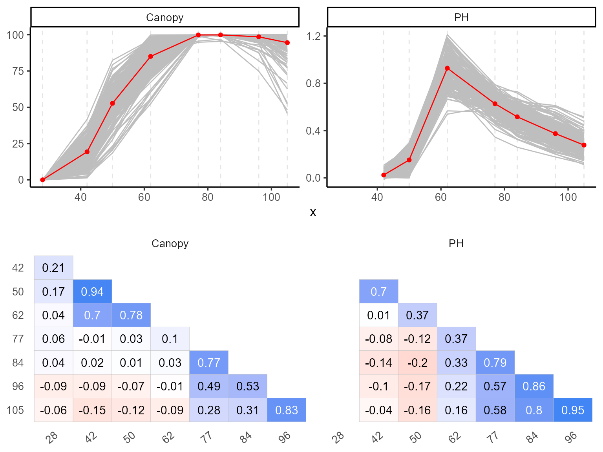
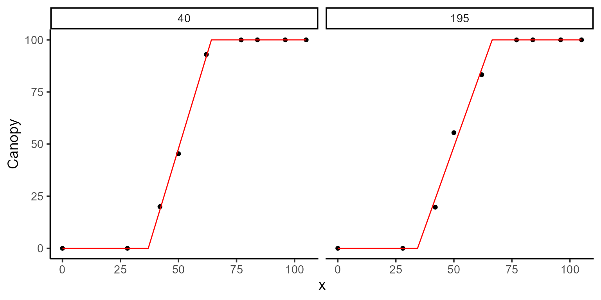

This vignette demonstrates how to use a double exponential model and plant height data derived from UAV imagery to estimate two key parameters:
- t2: the number of days it takes to reach the maximum plant height.
- f(t2): the maximum plant height.
Before fitting any model for plant height, we will first reference the previous vignette Modeling Canopy to estimate initial values for emergence, which will be used in the double-exponential model.
The data in this vignette are part of Professor Jeff Endelman’s breeding program, specifically from a partially replicated experiment. The UAV images were collected in 2022 and processed in 2024.
1. Exploring data
We start by exploring the data using the explorer function. This provides basic statistical summaries and visualizations, which help in understanding the temporal evolution of the variables for each plot and their correlations.
names(results)
#> [1] "summ_vars" "summ_metadata" "locals_min_max" "dt_long"
#> [5] "metadata" "x_var"
p1 <- plot(results, type = "evolution", return_gg = TRUE, add_avg = TRUE)
p2 <- plot(results, type = "x_by_var", return_gg = TRUE)
ggarrange(p1, p2, nrow = 2)
| var | x | Min | Mean | Median | Max | SD | CV | n | miss | miss% | neg% |
|---|---|---|---|---|---|---|---|---|---|---|---|
| PH | 28 | 0.00 | 0.00 | 0.00 | 0.00 | 0.00 | NaN | 16 | 180 | 0.92 | 0.00 |
| PH | 42 | -0.02 | 0.02 | 0.02 | 0.11 | 0.02 | 0.93 | 196 | 0 | 0.00 | 0.08 |
| PH | 50 | 0.00 | 0.15 | 0.16 | 0.30 | 0.07 | 0.45 | 196 | 0 | 0.00 | 0.01 |
| PH | 62 | 0.54 | 0.93 | 0.94 | 1.21 | 0.13 | 0.14 | 196 | 0 | 0.00 | 0.00 |
| PH | 77 | 0.34 | 0.63 | 0.63 | 0.79 | 0.08 | 0.13 | 196 | 0 | 0.00 | 0.00 |
| PH | 84 | 0.26 | 0.52 | 0.52 | 0.73 | 0.08 | 0.16 | 196 | 0 | 0.00 | 0.00 |
| PH | 96 | 0.18 | 0.37 | 0.37 | 0.61 | 0.08 | 0.22 | 196 | 0 | 0.00 | 0.00 |
| PH | 105 | 0.11 | 0.28 | 0.27 | 0.52 | 0.07 | 0.25 | 196 | 0 | 0.00 | 0.00 |
2. Estimating days to emergence
As previously shown in the canopy model vignette, we use a piece-wise regression function with three parameters: t1, t2, and k. This can be used to estimate the day of plant emergence (t1), which will later be used as input for the double-exponential model for plant height.
\[\begin{equation} f(t; t_1, t_2, k) = \begin{cases} 0 & \text{if } t < t_1 \\ \dfrac{k}{t_2 - t_1} \cdot (t - t_1) & \text{if } t_1 \leq t \leq t_2 \\ k & \text{if } t > t_2 \end{cases} \end{equation}\]
2.1. Fitting models for canopy
The parameters find here will serve as fixed parameters in the plant height model.
fixed_params <- data.frame(uid = c(195, 40), k = c(100, 100))
mod_1 <- dt_potato_22 |>
modeler(
x = DAP,
y = Canopy,
grp = Plot,
fn = "fn_piwise",
parameters = c(t1 = 45, t2 = 80, k = 0.9),
fixed_params = fixed_params,
subset = c(195, 40),
options = list(add_zero = TRUE, max_as_last = TRUE)
)
kable(mod_1$param)| uid | t1 | t2 | sse | k |
|---|---|---|---|---|
| 40 | 36.97210 | 64.17621 | 9.550087 | 100 |
| 195 | 34.34827 | 66.50274 | 70.106179 | 100 |
3. Expectation function for plant height
Once the data are explored, we define the expectation function for plant height, which in this case is a double-exponential function with four parameters: t1, t2, \(\alpha\), and \(\beta\). This function models the growth dynamics of plant height over time:
\[\begin{equation} f(t; t_1, t_2, \alpha, \beta) = \begin{cases} 0 & \text{if } t < t_1 \\ e^{\alpha \cdot (t - t_1)^2} - 1 & \text{if } t_1 \leq t \leq t_2 \\ \left(e^{\alpha \cdot (t_2 - t_1)^2} - 1\right) \cdot e^{\beta \cdot (t - t_2)} & \text{if } t > t_2 \end{cases} \end{equation}\]
4. Fixing parameters and providing initial values
Before fitting the plant height model, we take the t1 values from the canopy model and use them as fixed parameters in the plant height model. This ensures consistency between the two models.
| uid | t1 |
|---|---|
| 40 | 36.97210 |
| 195 | 34.34827 |
Additionally, we can specify initial values for the parameters of each plot to improve the model’s convergence.
initials <- mod_1 |>
pluck("param") |>
select(uid, t1, t2) |>
mutate(alpha = 1 / 600, beta = -1 / 30)
kable(initials)| uid | t1 | t2 | alpha | beta |
|---|---|---|---|---|
| 40 | 36.97210 | 64.17621 | 0.0016667 | -0.0333333 |
| 195 | 34.34827 | 66.50274 | 0.0016667 | -0.0333333 |
5. Fitting models for plant height
To fit the model, we use the modeler function. Here:
- x specifies the days after planting (DAP),
- y is the plant height variable to be modeled,
- grp is used for grouping, allowing analysis by plot.
In this example, although there are 196 plots, we will fit the model
for plots 195 and 40 as a subset. The fn_exp2_exp function
is defined, and we set initial values for the parameters.
mod_2 <- dt_potato_22 |>
modeler(
x = DAP,
y = PH,
grp = Plot,
fn = "fn_exp2_exp",
parameters = initials,
fixed_params = fixed_params,
subset = c(195, 40),
options = list(add_zero = TRUE)
)After fitting, we can inspect the model summary and visualize the fit using the plot function:
kable(mod_2$param)| uid | t2 | alpha | beta | sse | t1 |
|---|---|---|---|---|---|
| 40 | 64.55506 | 0.0009623 | -0.0424267 | 0.0031173 | 36.97210 |
| 195 | 62.00000 | 0.0008740 | -0.0197663 | 0.0144664 | 34.34827 |
6. Extracting model coefficients and uncertainty measures
Once the model is fitted, we can extract key statistical information, such as the estimated coefficients, standard errors, confidence intervals, and the variance-covariance matrix for each plot. This helps evaluate the reliability and uncertainty of the parameter estimates.
The functions coef, confint, and
vcov are used as follows:
- coef: Extracts the estimated coefficients for each group.
- confint: Provides the confidence intervals for the parameter estimates.
- vcov: Returns the variance-covariance matrix, which can be used to understand the relationships between the estimates and their variability.
coef(mod_2)
#> # A tibble: 6 × 6
#> uid coefficient solution std.error `t value` `Pr(>|t|)`
#> <dbl> <chr> <dbl> <dbl> <dbl> <dbl>
#> 1 40 t2 64.6 0.551 117. 8.57e-10
#> 2 40 alpha 0.000962 0.0000216 44.6 1.07e- 7
#> 3 40 beta -0.0424 0.00373 -11.4 9.15e- 5
#> 4 195 t2 62 0.569 109. 1.23e- 9
#> 5 195 alpha 0.000874 0.0000391 22.3 3.35e- 6
#> 6 195 beta -0.0198 0.00282 -7.00 9.16e- 4
confint(mod_2)
#> # A tibble: 6 × 6
#> uid coefficient solution std.error ci_lower ci_upper
#> <dbl> <chr> <dbl> <dbl> <dbl> <dbl>
#> 1 40 t2 64.6 0.551 63.1 66.0
#> 2 40 alpha 0.000962 0.0000216 0.000907 0.00102
#> 3 40 beta -0.0424 0.00373 -0.0520 -0.0328
#> 4 195 t2 62 0.569 60.5 63.5
#> 5 195 alpha 0.000874 0.0000391 0.000773 0.000975
#> 6 195 beta -0.0198 0.00282 -0.0270 -0.0125
vcov(mod_2)
#> $`40`
#> t2 alpha beta
#> t2 3.032779e-01 -4.754961e-06 -1.730619e-03
#> alpha -4.754961e-06 4.649682e-10 3.099682e-10
#> beta -1.730619e-03 3.099682e-10 1.388935e-05
#>
#> $`195`
#> t2 alpha beta
#> t2 3.235079e-01 -1.249703e-05 -6.795398e-04
#> alpha -1.249703e-05 1.531915e-09 -3.199694e-08
#> beta -6.795398e-04 -3.199694e-08 7.969588e-067. Predicting maximun plant height
Once we have estimated t2, which indicates the number of days it takes to reach maximum plant height, we can use the predict function to calculate the expected maximum height at that specific time point.
# Maximum Plant Height
predict(mod_2, x = 64.5550589254, id = 40)
#> # A tibble: 1 × 4
#> uid x_new predicted.value std.error
#> <dbl> <dbl> <dbl> <dbl>
#> 1 40 64.6 1.08 0.0429
predict(mod_2, x = 62.0000000000, id = 195)
#> # A tibble: 1 × 4
#> uid x_new predicted.value std.error
#> <dbl> <dbl> <dbl> <dbl>
#> 1 195 62 0.951 0.0483In this example, we predict the maximum plant height for plot 40 at approximately 64.56 DAP and for plot 195 at 62.00 DAP.
8. Modelling all plots using parallel processing
Finally, we can scale up this method to fit models for all 196 plots,
using parallel processing to accelerate the computation. By setting
parallel = TRUE in the options argument and specifying the
number of cores with parallel::detectCores(), the process
becomes much more efficient.
mod <- dt_potato_22 |>
modeler(
x = DAP,
y = PH,
grp = Plot,
fn = "fn_exp2_exp",
parameters = initials,
fixed_params = fixed_params,
subset = c(195, 40),
options = list(
add_zero = TRUE,
max_as_last = TRUE,
progress = TRUE,
parallel = TRUE,
workers = parallel::detectCores()
)
)